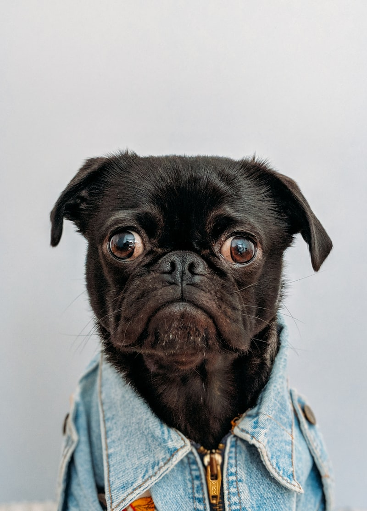

2 Days
Nakuru Safari + Restoration
Explore Lake Nakuru National Park, then visit a tree nursery and plant native species with local restoration leaders.
Lake Nakuru National Park
Tree nursery visit
Native species planting
Community engagement
Curated journeys where wildlife, restoration, culture, and hands-on community action meet.
Each visit pairs beautiful places with practical restoration work, storytelling, and community learning.
2 Days
Explore Lake Nakuru National Park, then visit a tree nursery and plant native species with local restoration leaders.
Lake Nakuru National Park
Tree nursery visit
Native species planting
Community engagement

5 Days
A transformative journey combining Maasai Mara and Nakuru wildlife with meaningful landscape restoration and community storytelling.
Maasai Mara & Lake Nakuru
Ecosystem restoration
Community storytelling
Wildlife exploration
If you have a unique group size, purpose, or number of days, we can curate a specific itinerary around your goals.
Enquire About a Custom Trip